Lab
AC Motor Drive Characterisation — Inverter Current Waveform Analysis at Variable Clock Frequencies
University Electrical Machines Lab — Power Electronics & Motor Control, 2021
Every motor connected to an inverter carries a hidden story inside its current
waveform — a story about switching quality, harmonic distortion, and thermal
behaviour. This laboratory session was an exercise in reading that story with
precision.
The experiment was conducted on the Lucas-Nülle CO3636 platform —
an industrial-grade servo drive test bench comprising the CO3636-3B static
converter unit, the CO3636-6W servo machine test bench, and the CO3636-3F
300W power electronic load. The bench was wired according to the three-phase
inverter schematic, with the three-phase induction motor mechanically coupled
to a programmable load, and measurement probes connected to capture voltage
and current simultaneously across operating conditions.
The software instrument used was the Frequency Converter
application, configured with a 5-second acceleration ramp, SV-SINE space
vector modulation mode, and a linear U/f characteristic set at 50 Hz nominal
frequency. The first task was establishing the baseline: measuring the
line-to-line supply voltage, the DC intermediate bus voltage, and the inverter
output voltage using the bench multimeter — confirming the theoretical
relationship between rectified DC bus and AC output.
The core of the session was the clock frequency comparison.
By sweeping the inverter's PWM switching frequency across 1 kHz, 4 kHz, and
8 kHz while holding all other parameters constant, the current waveform was
observed and photographed at each step. The results confirmed the fundamental
trade-off of inverter design: at low clock frequency (1 kHz),
the motor current was heavily rippled — rich with switching harmonics and
audibly noisier — while the RMS value of the output current remained
essentially unchanged. As the clock frequency rose to 8 kHz,
the current waveform smoothed progressively toward a clean sinusoid, the
acoustic noise of the motor dropped significantly, and the harmonic content
fell toward the fundamental — without any meaningful change in effective
current magnitude.
The second phase examined the effect of PWM modulation mode:
switching from SV-SINE space vector modulation to BLOCK mode (fundamental
frequency square-wave drive) and comparing the resulting current shapes.
Under BLOCK mode, the current harmonic distortion increased sharply — the
waveform degraded visibly from a near-sinusoidal profile into a distorted
shape, confirming that the modulation strategy is as critical to current
quality as the switching frequency itself.
A separate mechanical characterisation phase used the Lucas-Nülle
ActiveServo software to plot the full torque-speed and power-speed
curves of the induction motor under varying inverter output frequency —
recording synchronous speed transitions at 50 Hz, 45 Hz, 35 Hz, and 25 Hz,
and interpreting the proportional relationship between supply frequency and
rotor speed. The resulting characteristic curves, plotted live on the
measurement screen, gave a direct and measurable demonstration of variable
frequency drive operation.
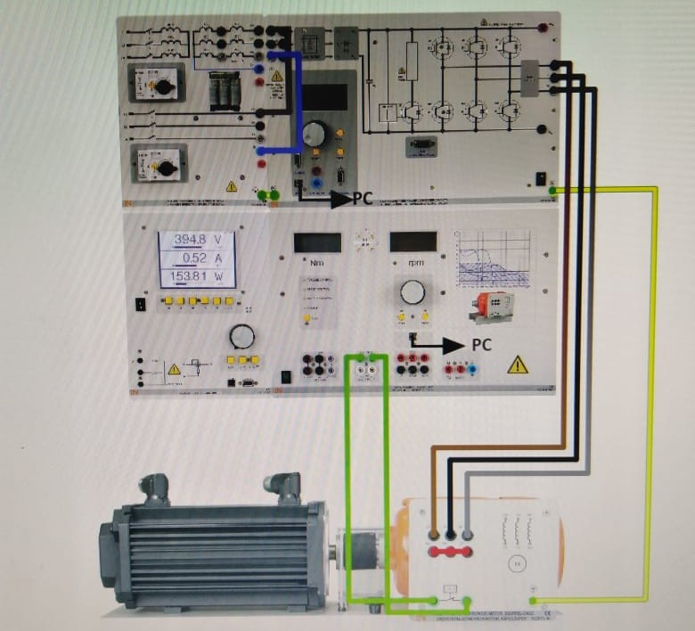
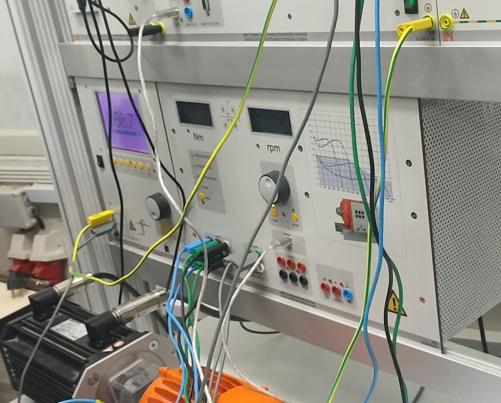
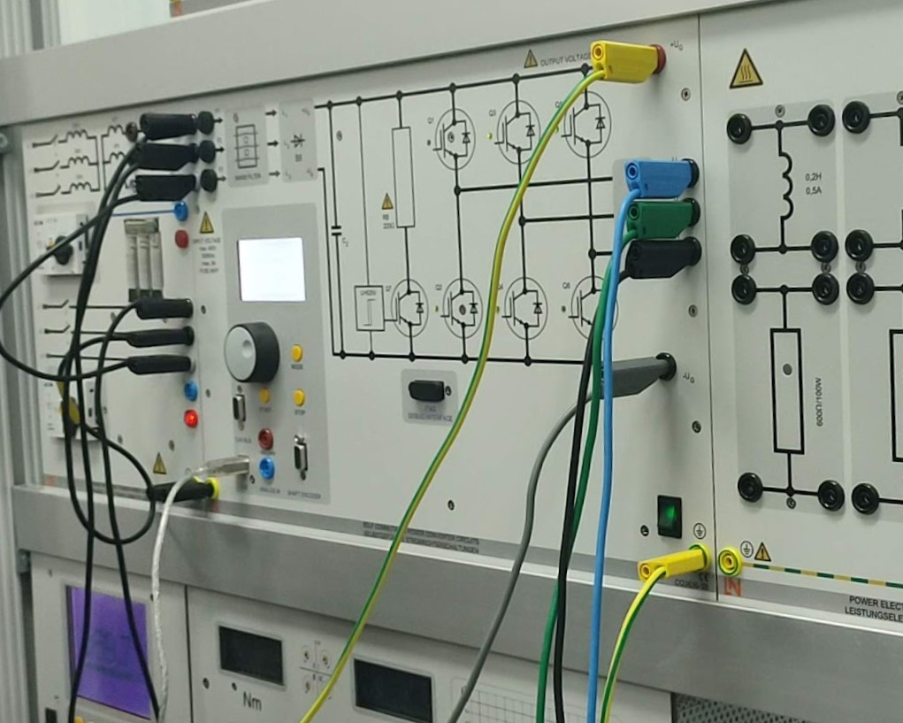
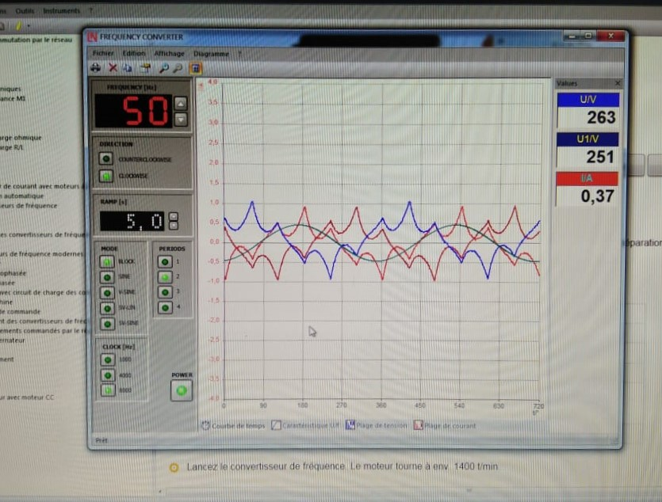
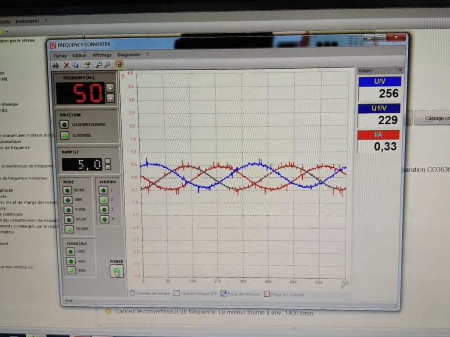
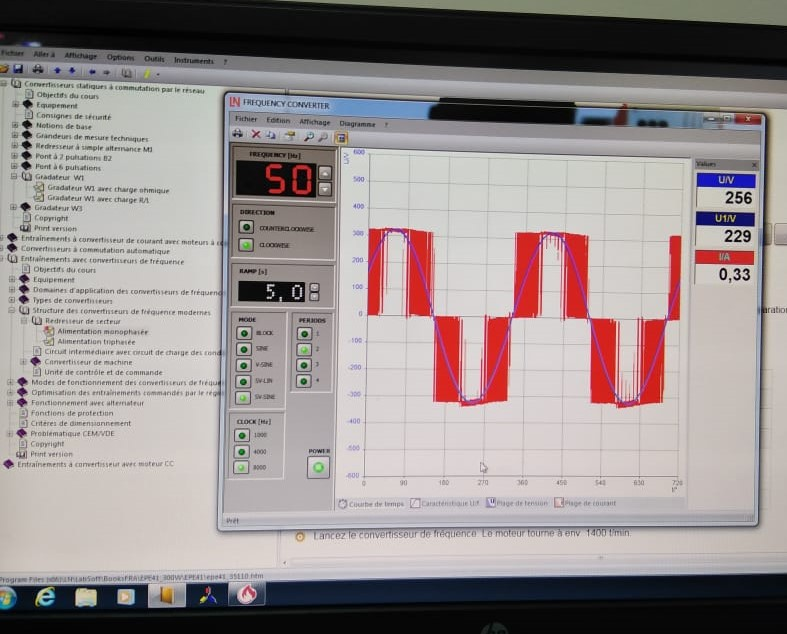
- Conducted a full inverter characterisation session on the Lucas-Nülle CO3636 industrial test bench — wiring the three-phase IGBT inverter circuit, power electronic load, and induction motor according to the lab schematic, from raw bench to live measurement.
- Configured the Frequency Converter software with SV-SINE space vector modulation, linear U/f characteristic, 5-second ramp, and 50 Hz nominal frequency — and verified the DC intermediate bus voltage and inverter output voltage against theoretical predictions using the bench multimeter.
- Performed a PWM clock frequency sweep from 1 kHz to 8 kHz, capturing and comparing current waveforms at each step — directly observing and documenting the progressive reduction in current ripple and motor acoustic noise as switching frequency increased.
- Confirmed the key inverter trade-off: higher clock frequency produces a cleaner, more sinusoidal current waveform with significantly less harmonic distortion, while the RMS value of the output current remains essentially constant across the full frequency range.
- Compared SV-SINE space vector modulation against BLOCK mode (fundamental frequency square-wave switching) — observing and recording the sharp increase in harmonic distortion and current waveform degradation under block commutation.
- Used Lucas-Nülle ActiveServo software to plot the live torque-speed and power-speed characteristic curves of the induction motor, recording synchronous speed at 50 Hz, 45 Hz, 35 Hz, and 25 Hz — and interpreting the linear proportionality between inverter output frequency and rotor speed.
- Completed a full written lab report documenting all measured values, waveform observations, multiple-choice analysis, and physical interpretations — published the current waveform comparison as a video demonstration on YouTube.
Electrique
Electrical Cabinet Assembly & Wiring — Training Internship
Chiheb Electrique — Low & Medium Voltage Cabinet Manufacturing, 2018
Before any software, before any PLC, there is wire. My first serious electrical
training was at Chiheb Electrique — a company that designs and
delivers custom electrical cabinets to industrial and commercial clients across
low, medium, and high voltage specifications. This was not a classroom. From the
first day, I was at the workbench with the schematics, the components, and the
tools — learning by assembling.
The training covered the complete lifecycle of a cabinet project: choosing the
right enclosure type (étanche or standard, sized by device count
and application), selecting the correct number of DIN rails and their organisation
within the enclosure, distributing devices across rails with intention — circuit
breakers, differential blocks, timing relays, contactors — and critically,
balancing electrical phases across the distribution to prevent
phase imbalance in three-phase systems. Cable selection followed its own discipline:
cross-section matched to current rating, routing kept straight and ordered through
the cable ducts, inputs and outputs separated, no crossing wires in the gutters.
The door panel was the last step — positioning indicator lights, selector switches,
and the emergency stop according to operator ergonomics and safety convention.
What this internship built, more than any technical skill, was a standard. Once
you have wired a cabinet correctly — every wire labelled, every phase balanced,
every cable routed cleanly — you can never again look at a messy panel without
knowing exactly what is wrong with it. That standard has stayed with me through
every electrical project since.
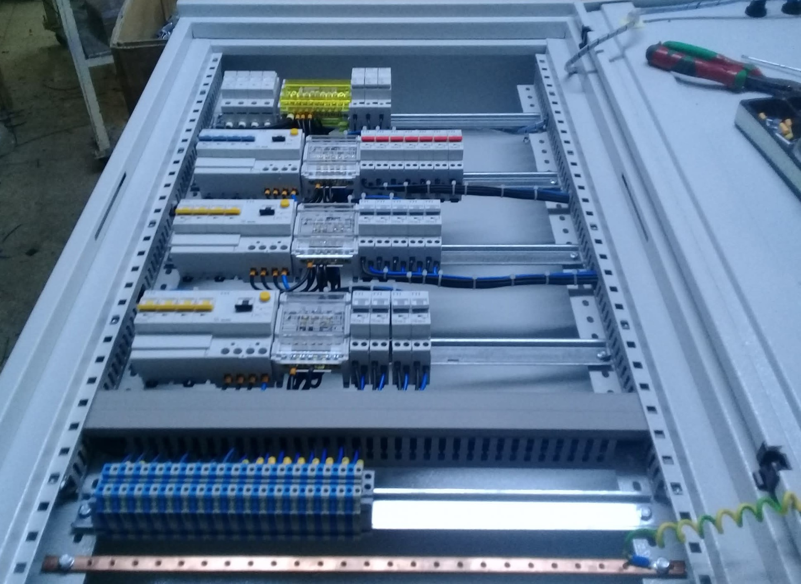
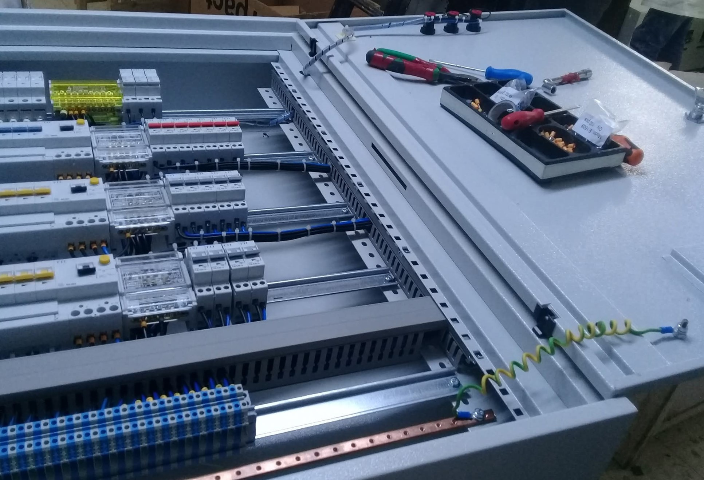
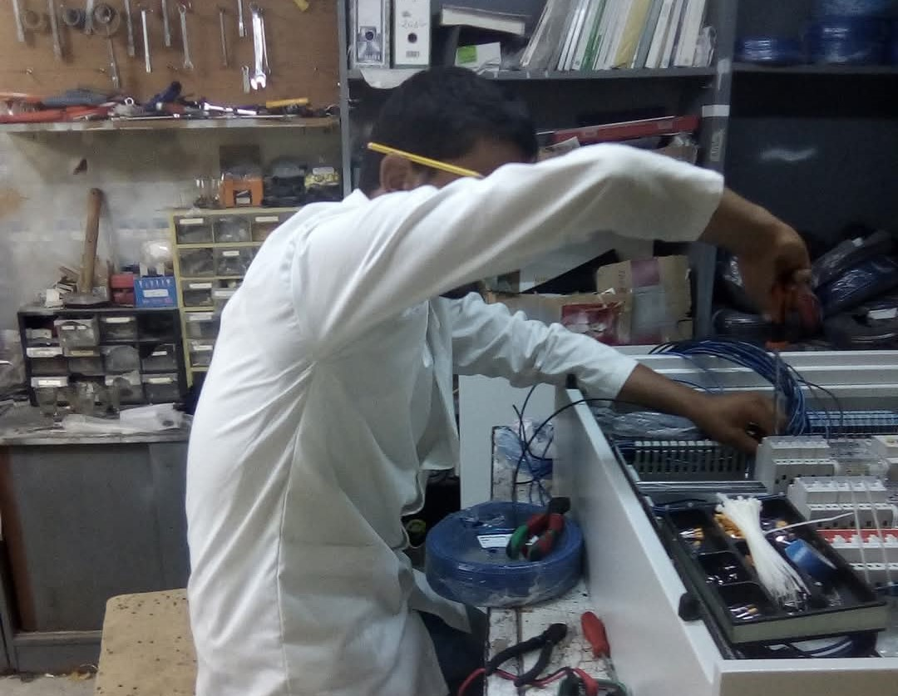
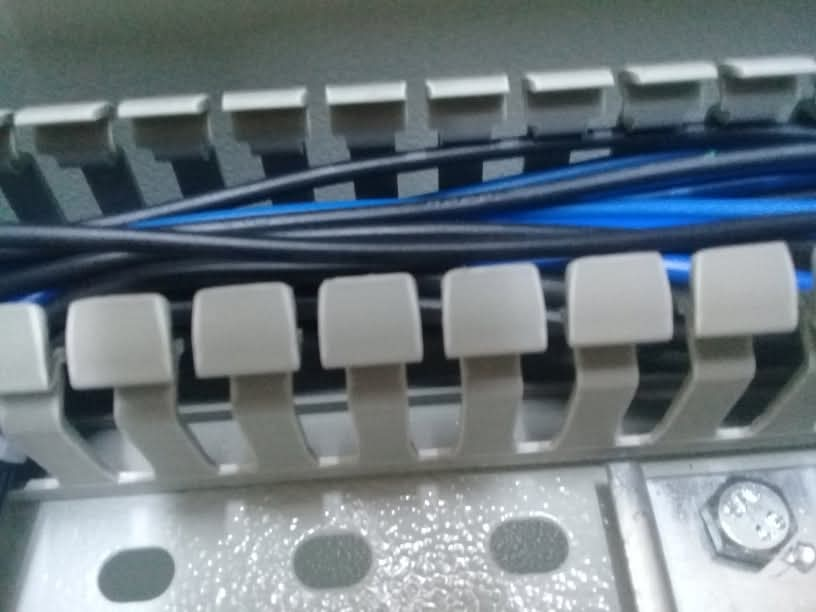
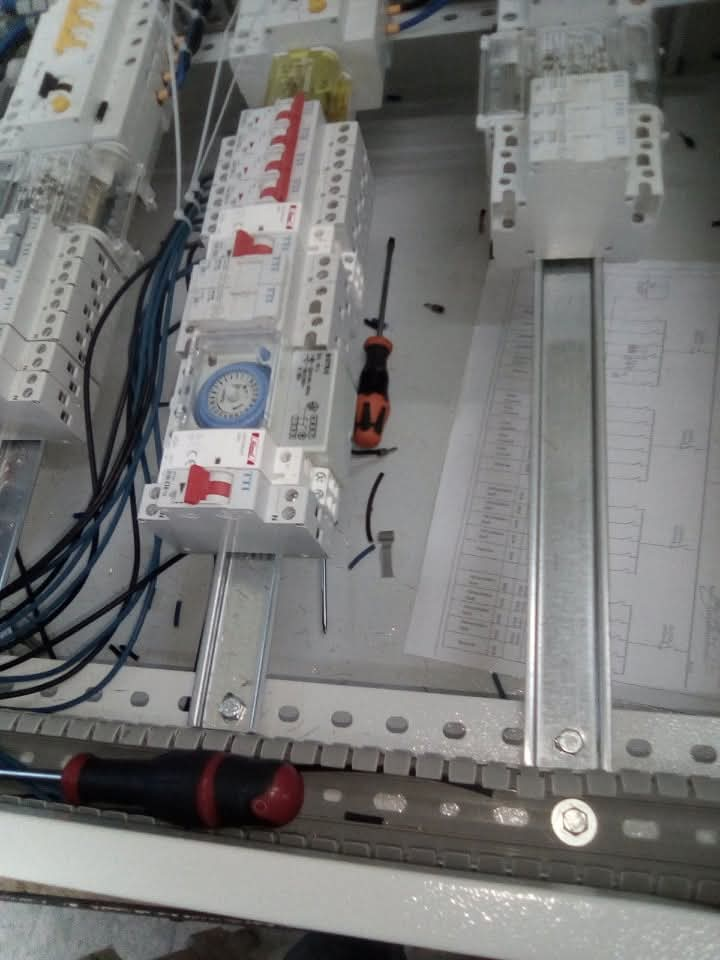
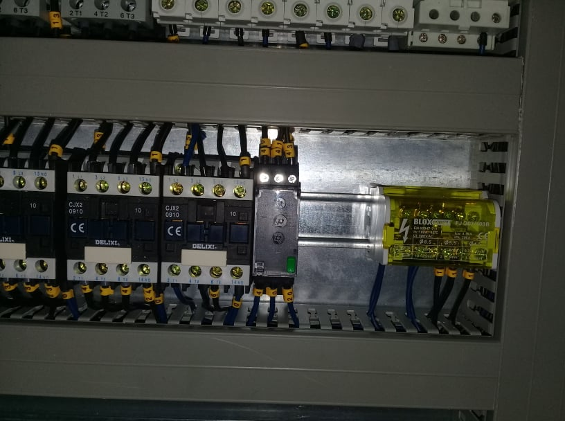
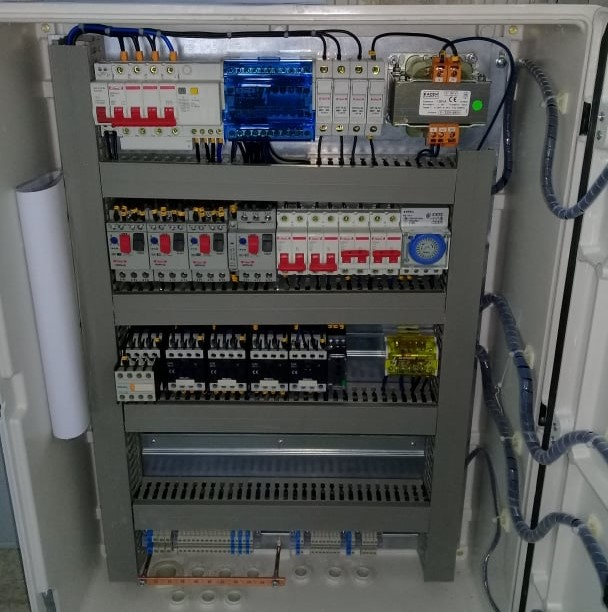
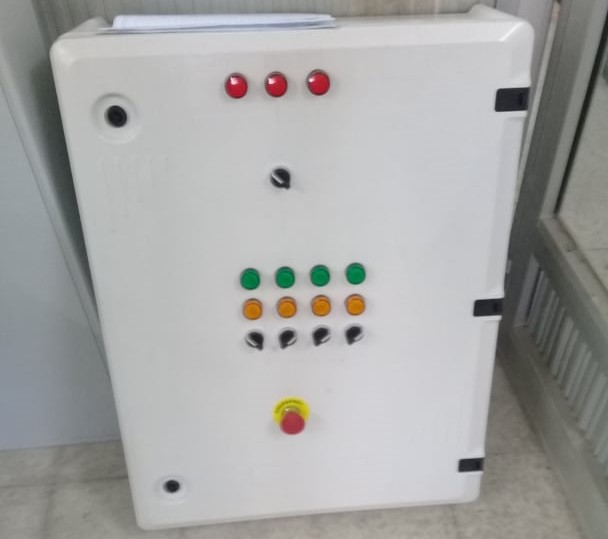
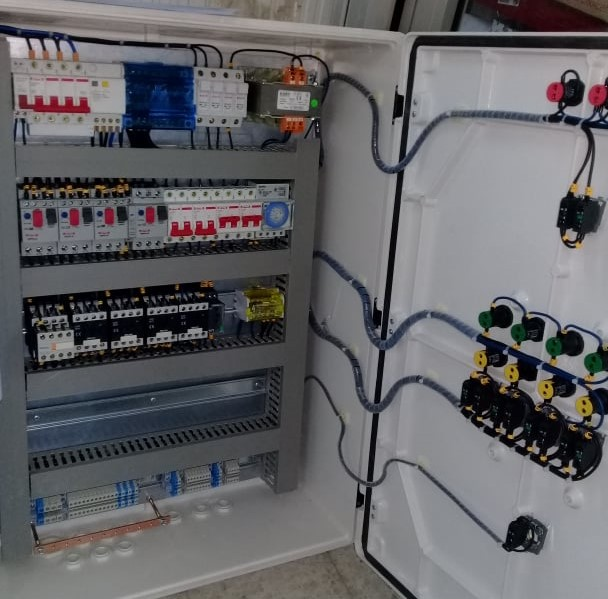
- Completed a hands-on training internship at Chiheb Electrique — a company specialising in the design and delivery of custom BT, MT, and HT electrical cabinets for industrial and commercial clients.
- Learned the full cabinet specification process: enclosure type selection (étanche vs. standard), sizing by device count and application, and DIN rail quantity and organisation planning.
- Applied three-phase load balancing methodology across MCB and distribution device rows — preventing phase imbalance in three-phase systems by intentional device distribution.
- Wired and installed control devices including circuit breakers, differential blocks, timing relays, contactors, intermediate relays, and control transformers — reading from electrical schematics throughout.
- Developed disciplined cable management practice: correct cross-section selection per current rating, straight routing through cable ducts, clean separation of inputs and outputs, and cable clip finishing.
- Designed and wired complete door panel assemblies: positioning fault indicators, run indicators, selector switches, and emergency stop buttons according to operator ergonomics and IEC safety conventions.
- Worked on multiple cabinet projects from raw enclosure to finished delivery — building a consistent personal standard for cleanliness, labelling, and electrical safety in every panel.